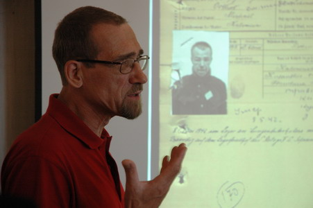
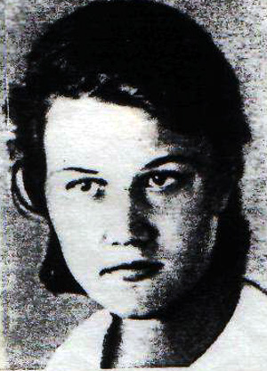

Георгий ХАРИТОНОВ
«Птица» и Генерал
(продолжение)
Продолжаем публикацию, посвященную памяти вице-президента Фонда «Жить и Помнить» Георгия Харитонова.
Георгий Васильевич регулярно выступал в газетах и журналах с яркими, пронзительными статьями о неизвестных эпизодах и забытых героях Великой Отечественной войны. Завершил, но не успел напечатать книгу о Лидии Базановой, исследование о Ржевском Дулаге.
Фрагменты из книги о Лидии Базановой увидели свет на страницах тверских газет. На этих материалах основана нынешняя публикация.
В Бресте советским разведчикам противостояла абвергруппа №315, сформированная при 399-й охранной дивизии. Ее возглавлял обер-лейтенант Франк Цинт (псевдоним - «Кимфер»). Заместителем Цинта, а по совместительству и переводчиком, был зондерфюрер Вильгельм Гасбах, так называемый русский немец, уроженец ближнего Подмосковья, эмигрировавший в Германию вместе с родителями еще в 1918 году. Именно при изучении его уголовного дела полковник Евгений Федоров случайно обнаружил записку Гасбаха, в которой шла речь об аресте советской радистки Лидии Базановой и передаче ее в распоряжение абвергруппы №315.
Вот как это случилось.
В Бресте из крупных военных штабов находился только штаб 8-го венгерского корпуса. «Птица» сообщила об этом в одной из своих первых шифровок. Штаб 2-й армии, по информации Базановой, дислоцировался в Пинске. Командовал армией генерал-полковник Вальтер Вейс, уроженец города Тильзит в Восточной Пруссии. Ранее он командовал 27-м пехотным корпусом, отличившимся под Ржевом. Именно за Ржевские бои фюрер наградил Вейса Золотым крестом. Начальником штаба армии был…
Впрочем, об этом позже.
Если в Бобруйск Базанова прибыла на подготовленную к работе базу, то в Бресте советских резидентур не было. Ей самой (это был единственный случай во время Великой Отечественной войны, когда женщина-радистка стала резидентом) приходилось создавать резидентуры практически с нуля. Разумеется, к работе радистки это не имело никакого отношения.
В этой связи встает закономерный вопрос: почему Базанову решили направить в город, где советская разведка не имела надежной агентуры?
В Бресте у нее оказался только один случайный знакомый - слесарь брестского паровозного депо Спиридон Сергеевич Григорук, сведений о котором, к сожалению, сохранилось очень немного. Именно Григорук познакомил «Птицу» со связными партизанских отрядов Гинем и его братом Виктором, с Иваном Филиппуком, с кухаркой шефа товарной станции «Брест-Восточный» Мозера Марией Каленик.
Каленик устроила Базанову уборщицей квартиры Мозера, что дало ей возможность получить аусвайс на пользование железнодорожным транспортом. Все это, разумеется, выглядит хорошо и солидно, вот только в условиях жестокой войны, где только один неверный шаг стоил человеку жизни, компетентность вышестоящих органов советской разведки вызывает большие сомнения…
Как бы там ни было, за очень короткое время «Птица» подготовила большую группу агентов. Дочь Григорука Нина собирала сведения о движении поездов южного (Ковельского) направления. Переписчик вагонов Кирилюк наблюдал за перевозками с Востока на Запад. Движение немцев по Московскому шоссе отслеживала домохозяйка Анна Клопова, жившая у Кобринского моста. Александра Шиш, переводчица комендатуры, доставляла сведения о состоянии брестского гарнизона.
Информация пошла, и тут, в самый неподходящий момент, в начале февраля 1944 года, у «Птицы» село питание рации. Ситуация была настолько критической, что Базанова обратилась с двумя буквально отчаянными письмами к руководителю советской диверсионной группы Михаилу Чернову, оперировавшему в районе Бобруйска. Дважды она просила Чернова о встрече. Дважды она приезжала в заранее назначенные места, но никого там не находила.
«Птица» буквально упрашивала достать ей батареи, продукты, деньги, так как, по ее собственным словам, она оказалась в очень дрянном положении.
Генерал
Не менее сложное, я бы даже сказал, отчаянное положение, было у начальника штаба 2-й армии вермахта генерал-майора Хеннига фон Трескова. Он видел, что война идет к позорному концу, он не мог сидеть сложа руки, когда в бессмысленной бойне погибали миллионы людей.
Это был человек чести, редкого мужества и большого оперативного таланта. Родился он 10 января 1901 года в Померании, в семье старопрусских помещиков. Разумеется, военная карьера стала единственным достойным применением его сил.
На фронт Первой мировой он ушел добровольцем в 16 лет. Сражался на Западном фронте. В 1919 году как солдат Добровольческого корпуса принял участие в подавлении революционного движения в Германии. В 1924 году получил лейтенантские погоны Рейхсвера.
Молодой офицер с восторгом принял программу Гитлера. Он увидел в ней освобождение от пут насквозь коррумпированной Веймарской системы, которая так напоминает сегодняшнее положение дел в России. Его до глубины души оскорблял несправедливый и грабительский Версальский мирный договор, согласно которому спекулянты всего мира имели право грабить германский народ.
Отрезвление приходило постепенно. Фон Тресков, воспитанный на рыцарских принципах ведения войны, не принял доктрину нацистов уничтожения целых народов во имя торжества мифической германской расы.
Еще во время Польской компании, осенью 1939 года, он, тогда офицер Генерального штаба при одной из дивизий, сказал своему другу барону Фабиану фон Шлабрендорфу:
- Долг чести требует от нас не щадить себя ради скорейшего падения Гитлера и национал-социализма, чтобы спасти Германию и Европу от варварства.
Это были не пустые слова.
Начиная с 1941 года, когда командир 58-го пехотного полка 6-й пехотной дивизии 9-й армии вермахта полковник фон Тресков получил назначение на Восточный фронт, он вошел в группу оппозиционных к Гитлеру офицеров и генералов. Эти люди считали стратегической ошибкой войну против СССР. Они категорически протестовали против нечеловеческого отношения к советским военнопленным. Считая Сталина тираном и убийцей, они всеми силами стремились к объединению с русскими генералами, оказавшимися в германском плену, с целью создания союзного Германии антисталинского правительства России.
При всем том внешне фон Тресков оставался прусским служакой. Он быстро продвигался по служебной лестнице. Только самый ограниченный круг единомышленников знал, что этот человек постоянно ищет способ покончить с Гитлером и его окружением.
Вокруг фон Трескова постепенно сформировался штаб заговорщиков. Нити заговора вели в Берлин, к видному военному чиновнику Гёрделеру, к герою африканской компании графу фон Штауфенбергу и другим высшим военным чинам Рейха.
13 марта 1943 года, когда Гитлер посетил штаб группы армий «Центр» в Смоленске, фон Трескову, тогда офицеру оперативного отдела штаба, и фон Шлабрендорфу удалось заложить в самолет Гитлера бомбу замедленного действия. Бомба не взорвалась. Не потерявший хладнокровия Шлабрендорф сумел на глазах у охраны ставки фюрера в Восточной Пруссии, куда прибыл самолет, изъять ее. Покушение осталось тайной на долгие годы.
Фон Тресков не принимал непосредственного участия в покушении на Гитлера 20 июня 1944 года. Но он, безусловно, знал о нем. Когда 21 июня ему по телефону сообщили о неудаче покушения, генерал выехал на передовую, имитировал перестрелку с советскими аванпостами и подорвал себя гранатой. Так он хотел спасти от репрессий своих друзей и близких.
В штабе он оставил шифрованную записку.
Вот она:
«Теперь все наци набросятся на нас и будут поливать грязью. Но сегодня, как никогда, я убежден, что мы поступили правильно. Я считаю Гитлера врагом не только Германии, но и всего мира… Моральная ценность человека определяется тогда, когда он показывает, что готов отдать жизнь за свои убеждения».
Под последними словами «Птица» вполне могла бы поставить свою подпись. Однако два убежденных противника национал-социализма так никогда и не узнали друг о друге. Более того, фон Тресков не колеблясь дал санкцию на расстрел 15-и членов советской резидентуры в Белоруссии. В их числе была и Лидия Андреевна Базанова.
Можно, конечно, задать вопрос: почему?
Генерал, при всех своих антинацистских настроениях, был подлинным и убежденным врагом «Птицы». Он любил свою страну по-своему и, разумеется, никогда не пошел бы на переговоры со Сталиным. «Птица» тоже любила свою страну, и потому в самое трудное для себя время, в Брестской тюрьме, отвергла саму мысль о сотрудничестве с врагом.
С этим все ясно. Другая мысль не дает мне покоя. В немецком тылу работа «Птицы» шла очень трудно. Не потому, что разведчице не хватало опыта, а потому…
И тут я встаю в тупик.
Пропавшая без вести?
…Только через месяц проволочек и непонятной бездеятельности, в начале марта 1944 года, Базанова получила от разведуправления питание для рации и деньги.
Точных сведений, как это произошло, у нас нет.
По одной версии, к ней был послан специальный связник Владимир Шайкин, имевший три заброски в тыл к немцам. Он даже оставил свои воспоминания об этой операции.
По другой - питание «Птице» доставила партизанская связная Василиса Селивоник.
По третьей версии, батареи прибыли в Брест в корзине под яйцами, которые привезла Базановой ее подруга, жительница Бреста Вера Жигимонт.
Впрочем, сейчас это уже неважно.
10 марта связь с Базановой была восстановлена. Разведотдел информировал, что Указом Президиума Верховного Совета СССР от 4 февраля 1944 года она награждена орденом Отечественной войны 2-й степени. Одновременно разведчице был присвоен новый позывной - «Горлица». Базанову предупредили, чтобы она готовилась к переброске на левый берег Западного Буга, в Польшу.
Однако в начале апреля связь с «Горлицей» вновь прервалась. Теперь уже навсегда.
Что же случилось? Почему немцам удалось разгромить хорошо законспирированную советскую разведывательную сеть не только в Бресте, но и в Бобруйске, и в Осиповичах?
Официальное расследование, проведенное разведотделом и СМЕРШем 2-го Белорусского фронта летом 44-го, результатов не дало. Более того, старший помощник начальника разведотдела Алексей Овчинников отправил матери Базановой заведомо ложное сообщение о том, что «ее дочь, старший сержант Базанова Лидия Андреевна, находясь на фронте, пропала без вести в г. Бресте в декабре 1944 года».
Что это, обыкновенная халатность чиновника? Или равнодушное, свойственное сталинской военной бюрократии, наплевательское отношение к судьбе маленького человека?
Трудно сказать.
Известно только, что Овчинников знал об аресте «Горлицы» в апреле 1944 года. Об этом сообщил разведотделу агент «Костров», о котором история не сохранила никаких сведений.
А вот что мы сегодня знаем об этой трагической истории.
В конце марта 1944 года старший агент бобруйской абвергруппы №107 «Виддер» Дмитрий Замотин и следователь Василий Погожаев вышли на след террористической организации, ставившей целью взрывы объектов жизнедеятельности города и прилегающих населенных пунктов. По этому делу был арестован бургомистр поселка Ясень Осиповичского района Константин Хаустович. Под угрозой физического воздействия он признался, что в диверсионную работу его вовлекла родная тетка Елизавета Станишевская. Выдал он и двух резидентов советской разведки в Осиповичах - Евгения Дубовика, переводчика Осиповичской комендатуры и Матвея Миронова.
Реакция немцев последовала незамедлительно. Машины с солдатами СД выехали по указанным адресам. Руководил операцией начальник абвергруппы «Виддер» Доллерт.
Немцам повезло. Вместе с резидентами они доставили и двух советских радисток - подругу Базановой Анну Кошелеву и Екатекрину Катюбенко. Обе радистки с рациями были отправлены в штаб 9-й армии. Они дали согласие участвовать в радиоигре на стороне немцев.
Дальше аресты покатились как снежный ком. В руки абверовцев попали трое служащих бобруйской управы, связанные с партизанами, учительница Леванович-Попова. От нее немцы впервые услышали о существовании опытной советской радистки Базановой - «Карчевской».
В Брест за ней был послан специальный самолет.
Арест производили следователь Василий Погожаев и старший агент Дмитрий Замотин. Судя по трофейным документам, Базанову не били. Ее уличали очными ставками. Главными свидетелями ее антинемецкой деятельности оказались Анна Кошелева и Катя Катюбенко.
В результате расследования, которое вели прибывшие из Бреста офицеры Абвера Цинт и Гасбах, в тюрьме оказались все, кто хоть косвенно имел отношение к Базановой - Александра Питкевич, Иван Шевчук, резидент в Бобруйске Григорий Семенович Преволович, из дома которого «Птица» вела радиопередачи. Брестский связной «Птицы» Спиридон Григорук был арестован со всей семьей.
|